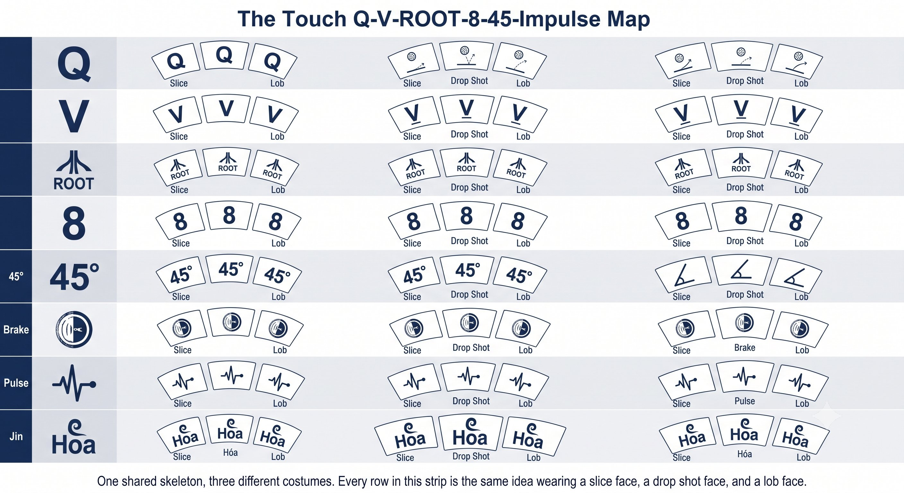
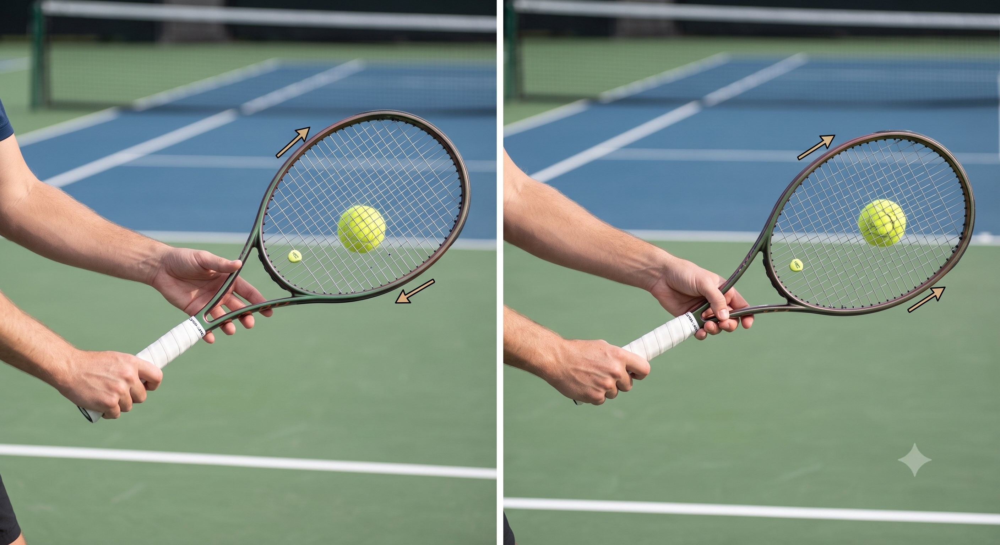
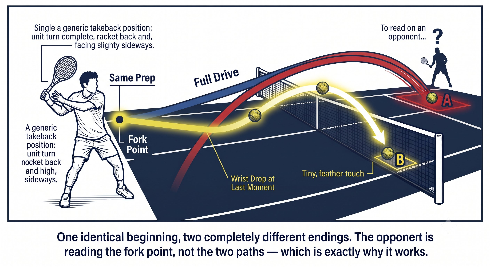
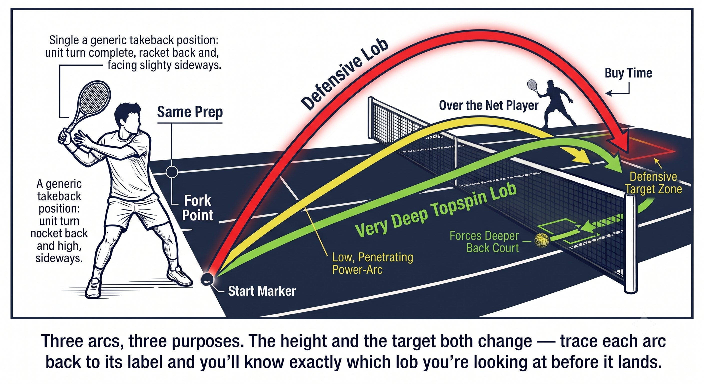
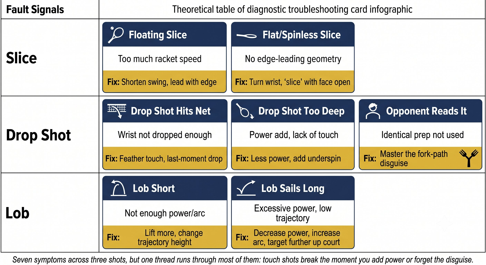

Chương 25: Slice Drop Shot Và Lob¶
SLICE, DROP SHOT & LOB¶
Trò Chơi Chạm và Phá Nhịp (The Touch & Disruption Game)¶
Không phải cú đánh nào cũng là về công suất. Slice phá vỡ nhịp điệu. Drop shot phá vỡ vị trí. Lob mua thời gian hoặc tấn công.
Vì Sao Các Cú Đánh Chạm Bóng Quan Trọng¶
Công suất thắng điểm. Chạm bóng thắng trận đấu. Người chơi có thể thay đổi tốc độ, xoáy, và độ cao sẽ kiểm soát được đối thủ.

Hình 25.1
— Henry Phạm
Ba cú đánh này chia sẻ chung một bản chất: chúng dùng tốc độ của đối thủ để chống lại chính họ. Đây là các cú đánh Hóa Kình — hấp thu và chuyển hướng.
Bản Đồ Chạm Bóng Q-V-ROOT-8-45-Impulse¶
QUY TẮC: Các cú đánh chạm bóng chạy trên độ vững hằng định (4 đến 5 trên 10). Không có gradient. Mặt vợt khóa sớm. Hóa Kình — hấp thu và chuyển hướng.
Slice (Trái Tay và Thuận Tay)¶
Slice không phải là một cú chặt xuống. Đó là một cú trượt có kiểm soát với mặt vợt hơi mở, di chuyển từ ngoài vào trong (trái tay) hoặc từ trong ra ngoài (thuận tay).

Hình 25.2
Mẹo Huấn Luyện¶
Lỗi slice số một: mở mặt vợt quá nhiều, khiến bóng bay dài ra ngoài. Cách sửa: cảm nhận cạnh ngón út dẫn đầu. Mặt vợt tự vuông góc tại tiếp xúc. Slice không phải là "mặt mở" — đó là "cạnh dẫn, mặt theo sau."
Drop Shot¶
Drop shot không phải là một cú đánh nhẹ. Đó là một cú đánh được giấu ý đồ. Đối thủ phải nghĩ đó là một cú drive cho đến khi đã quá muộn.
— Henry Phạm
NGUYÊN LÝ: Drop shot nghĩa là bài tập 3-1. Đánh 3 cú drive, 1 cú drop. Cùng chuẩn bị. Đối thủ không thể đọc được.

Hình 25.3
Mẹo Huấn Luyện¶
Nếu bạn cảm thấy cổ tay "vẩy" trên drop shot, bạn đang dùng cơ. Drop shot nghĩa là thả lỏng — để đầu vợt rơi nhờ trọng lực. Mặt vợt mở ra. Trái bóng hôn nhẹ lên dây.
Lob¶
Lob tấn công là một cú đánh topspin, không phải một cú moonball. Cọ lên ở góc 45 độ. Mặt vợt khép lại xuyên suốt tiếp xúc.
Tín Hiệu Lỗi¶
Bài Tập¶
-
Slice vào tường: đánh 50 quả slice vào tường. Tập trung: cạnh dẫn đầu, mặt vợt không đổi, và nhịp điệu.
-
Bài tập 3-1: đối tác nạp bóng. 3 drive, 1 drop. Cùng chuẩn bị. 20 chu kỳ.
-
Drop và pass: bạn đánh drop, đối tác chạy vào, bạn đánh pass. Bài tập này rèn luyện sự giấu ý đồ cộng với cú theo sau.
-
Luyện tập lob: đối tác đứng ở lưới. Bạn đánh lob tấn công topspin. Mục tiêu: góc vạch cuối sân.
-
Vòng lặp chạm bóng: slice trái tay, slice thuận tay, drop trái tay, drop thuận tay, lob tấn công — mỗi loại 5 lần. Tập trung: độ vững hằng định và kiểm soát mặt vợt.
CẠNH DẪN. MẶT KHÓA. HÓA. CHUYỂN HƯỚNG. GIẤU Ý ĐỒ.

Hình 25.4
Danh Sách Kiểm Tra¶
– Slice: cầm Continental, cạnh dẫn đầu, mặt vợt không đổi, cao xuống thấp, kết thúc cao.
– Drop shot: cùng chuẩn bị như drive, cầm Continental, mặt vợt mở tại tiếp xúc, hấp thu tốc độ, đóng băng kết thúc.
– Lob: tấn công nghĩa là cọ lên với topspin. Phòng thủ nghĩa là mặt vợt mở, kết thúc cao.
– Mọi cú chạm bóng: cổ tay vững (4 đến 5 trên 10), hằng định, không có gradient. Hóa Kình.
– Giấu ý đồ: bài tập 3-1. Đối thủ không thể đọc được.

Hình 25.5
– Nếu slice bay dài, mặt vợt quá mở. Nếu drop vào lưới, cắt quá nhiều. Nếu lob ngắn, không có topspin.
Chương Này Dẫn Đến Đâu¶
Chương này tích hợp Q-V-ROOT-8-45-Impulse-Kình vào slice, drop shot, và lob. Chương 26 bao quát hình học sân và lựa chọn cú đánh. Chương 27 bao quát các mẫu hình đơn và hệ thống đánh đôi.
←Chương TrướcChương 24: Vô-Lê & OverheadChương TiếpChương 26: Hình Học Sân→